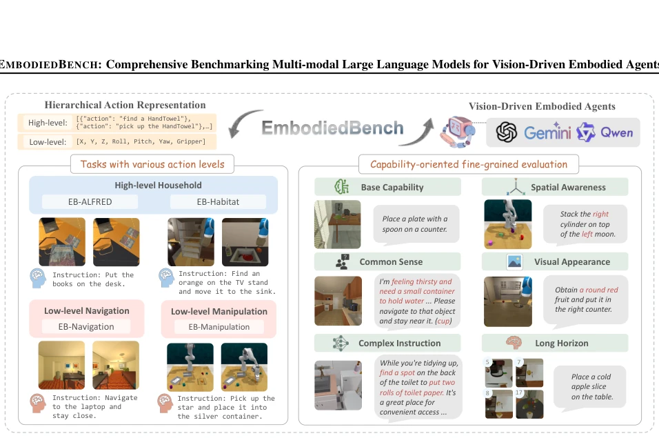
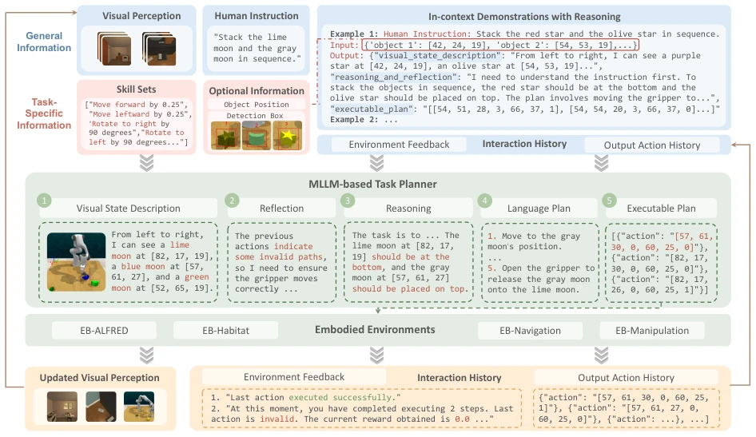
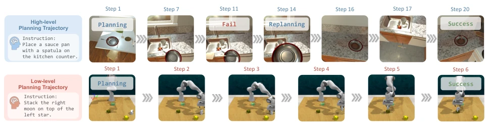
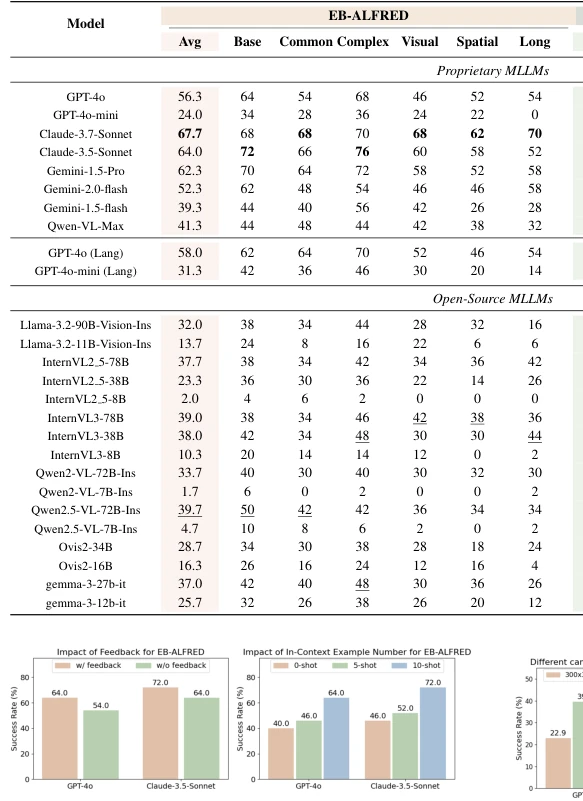
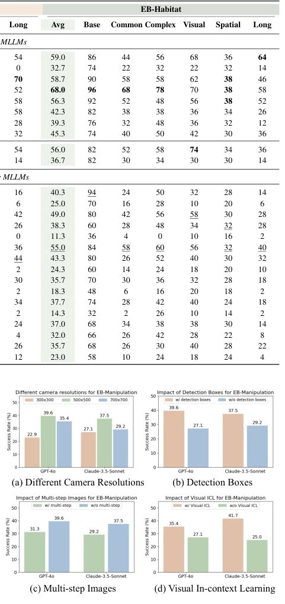
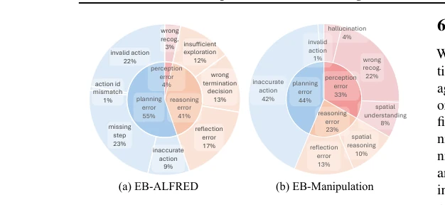
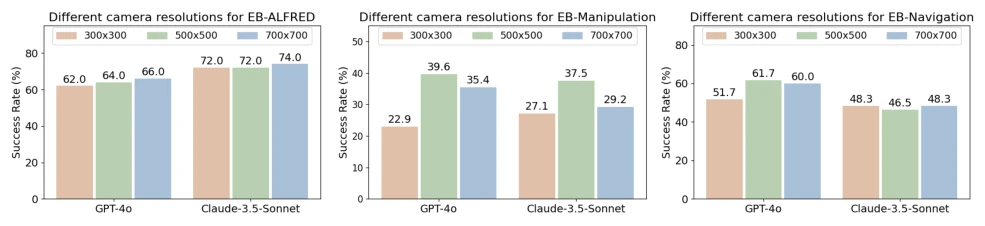
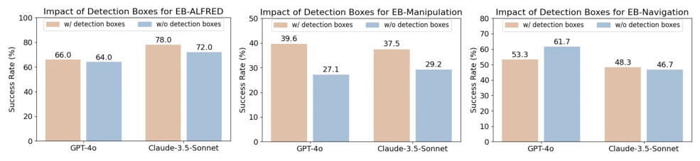
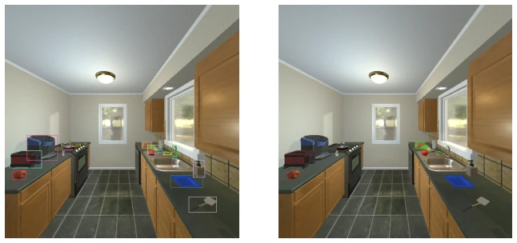
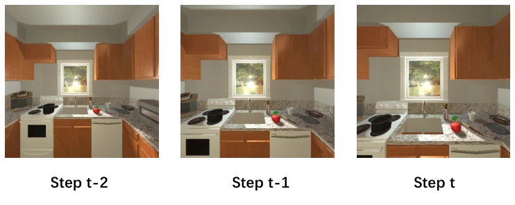

This paper pours cold water on MLLM embodied intelligence. Although EMBODIEDBENCH claims to be "comprehensive," covering high and low-level tasks, the results are quite awkward: top-tier models like GPT-4o only average 28.9% on low-level operations. Previously, everyone thought MLLMs could master all tasks, but now it is discovered that they still exhibit "high aspirations and low execution". However, decomposing tasks into 6 capability dimensions is quite interesting, more useful than simply looking at success rates, and can precisely locate weaknesses. Unfortunately, it is still run in simulation, and whether real robots can withstand it remains a question mark. Furthermore, vision has a negligible impact on high-level tasks, which challenges the "vision-driven" hypothesis. Overall, it is a decent benchmark, but do not expect it to immediately solve the "last mile" of embodied intelligence, after all, the gap between simulation and reality still exists.
研究动机Motivation
现有具身智能评估多集中在语言模型（LLM）或高层规划，缺乏对视觉驱动 MLLM 的全面评估。VisualAgentBench (Liu et al., 2024e) 虽涉及视觉，但仅关注高层规划，忽略了导航和抓取等底层动作。AgentBench (Liu et al., 2023b) 和 Lota-bench (Choi et al., 2024) 也主要侧重高层语义。这导致我们不清楚视觉在底层控制中的真实作用，以及 MLLM 在复杂规划中的短板。作者旨在填补这一空白，通过分层任务和细粒度能力评估，揭示 MLLM 在真实物理交互中的真实水平，为后续研究提供标准化参照。
Existing embodied intelligence evaluations mostly focus on language models (LLMs) or high-level planning, lacking comprehensive evaluation of vision-driven MLLMs. VisualAgentBench (Liu et al., 2024e) although involves vision, only focuses on high-level planning, ignoring low-level actions such as navigation and grasping. AgentBench (Liu et al., 2023b) and Lota-bench (Choi et al., 2024) also mainly focus on high-level semantics. This leads to us not knowing the true role of vision in low-level control, and the shortcomings of MLLMs in complex planning. The authors aim to fill this gap, through hierarchical tasks and fine-grained capability evaluation, revealing the true level of MLLMs in real physical interaction, providing a standardized reference for subsequent research.

Figure 1. Overview of EMBODIEDBENCH. Two key features of our benchmark: various action levels and capability-oriented evaluation.
The core is the EMBODIEDBENCH framework. Includes four environments: EB-ALFRED and EB-Habitat responsible for high-level tasks, EB-Navigation and EB-Manipulation responsible for low-level atomic actions. Agent adopts a unified Pipeline (Figure 2): inputs include instructions, vision, historical interaction and feedback; Task Planner is responsible for generating text descriptions, reasoning, and executable plans in JSON format. Innovations lie in hierarchical action definition (high-level decomposed into low-level atomic actions) and six-dimensional capability evaluation (basic, commonsense, complex instructions, spatial, vision, long-horizon planning). For low-level operations, action space discretization and detection box assistance were done, helping the model locate objects. During evaluation, not only success rate is looked at, but also three types of errors are analyzed: perception, reasoning, planning. Additionally, a multi-step planning mechanism was designed, allowing dynamic determination of action count, reducing API calls. Data collection combines human annotation and GPT-4o enhancement, ensuring instruction diversity.

Figure 2. The vision-driven agent pipeline used in EMBODIEDBENCH. This pipeline serves as a robust framework for processing multimodal inputs, reflection and reasoning, and generating executable plans. For detailed descriptions, refer to Section 4.3.

Figure 3. Planning examples in EB-ALFRED and EB-Manipulation based on GPT-4o.
Evaluated 24 MLLMs (including GPT-4o, Claude, InternVL3, etc.). Main findings: high-level tasks performance is passable, low-level operations are extremely poor (GPT-4o only 28.9%). Long Horizon planning is the biggest bottleneck, performance decline is most obvious. Ablation experiments show, vision is crucial for low-level tasks (performance drops 40-70% after removal), impact on high-level is small, even without vision high-level performance is comparable. Resolution 500x500 is best, detection boxes can improve localization, but multi-step image input instead confuses the model. Error analysis indicates planning errors and perception errors are main failure causes, among which perception error proportion in EB-Manipulation reaches up to 33%.

Figure 4. Language-centric ablations on EB-ALFRED.

Figure 5. Visual-centric ablations on EB-Manipulation.

Figure 6. Error Analysis.
其他图片Other Figures

Figure 7. Impact of different camera resolutions on EMBODIEDBENCH.

Figure 8. Impact of detection boxes on EMBODIEDBENCH.

Figure 9. Illustration of Multiple (left) or Single (right) Detection Boxes in EB-Navigation

Figure 10. Multi-step observation example in EB-Navigation